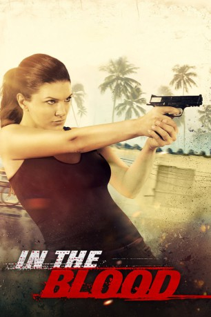

#932 In the Blood
 
 IMDB-Wertung: 5.8 / 10
IMDB-Wertung: 5.8 / 10  Metascore: 40
Metascore: 40 
Während eines romantischen Hochzeitsurlaubs geraten Ava und Derek in einige Schwierigkeiten. Zuerst bekommen sie in einem Nachtclub Streit mit einem Schläger. Dann widerfährt ihnen am Tag darauf beim Seilrutschen ein furchtbarer Unfall: Derek stürzt mehrere dutzend Fuß in die Tiefe und wird schwer verletzt. Schnell wird er ins Krankenhaus transportiert, doch als Ava dort ankommt, scheint dort niemand irgendetwas über ihren Mann zu wissen - als wäre er nie angekommen, als ober gar nicht existieren würde. Schnell zieht Ava die Behörden zu Rate, doch auch dort trifft sie auf unsichtbare Mauern. Sie ahnt, dass irgendjemand ihren Mann verschleppt hat und sie ihn möglicherweise nie wiedersehen wird. Somit beschließt sie, sich auf ihre eigene Kraft zu verlassen und Derek auf eigene Faust zu retten
Jahr: 2014
Dauer: 108 Minuten
FSK: 18
Land: England Studio: EuroVideoTonspuren: DTS - ,
Untertitel:
Auflösung: 1080p (1920x1080) Größe: 8253 MB
Genre: Action, Krimi, Thriller
Regisseur:  John Stockwell
John Stockwell
Drehbuch: James Robert Johnston, Bennett Yellin
Soundtrack: Paul Haslinger
Darsteller:
 Gina Carano als Ava
Gina Carano als Ava Cam Gigandet als Derek Grant
Cam Gigandet als Derek Grant Danny Trejo als Big Biz
Danny Trejo als Big Biz Luis Guzmán als Chief Ramón Garza
Luis Guzmán als Chief Ramón Garza Stephen Lang als Casey
Stephen Lang als Casey Amaury Nolasco als Silvio Lugo
Amaury Nolasco als Silvio Lugo Ismael Cruz Cordova als Manny
Ismael Cruz Cordova als Manny Treat Williams als Robert Grant
Treat Williams als Robert Grant- Yvette Yates als Leta
 Eloise Mumford als Sandy Grant
Eloise Mumford als Sandy Grant Ben Hernandez Bray als Officer Santos
Ben Hernandez Bray als Officer Santos- Hannah Cowley als Monique Grant
- Paloma Louvat als 14 Year Old Ava
- James O. Beatty als Wedding Party
- Cameron Denny als Frat Boy
- Blas Diaz als Omar
- Quinn Early als Gang member
 Eddie J. Fernandez als Officer Perin
Eddie J. Fernandez als Officer Perin Joseph Oliveira als Wedding Guest
Joseph Oliveira als Wedding Guest Brian Tester als Tom Lanford
Brian Tester als Tom Lanford- Pablo Cunqueiro als Dr. Abelard
- Raul Alcocer als Kash
- Oscar H. Guerrero als JoJo
- Jaunchy Capella als Zip Line Owner
- Glidden Quiñones als Skinhead
- Lawrence P. Searles als Priest
- Raúl Román als Bouncer at Bathroom Door
- Clifford Myatt als Wedding scene
- Liam Marie Rodriguez als TV Reporter
- Rodolfo Rodríguez als Fitz
- Luillo Ruiz als Luillo, Lugo's right hand man
- Antonio Torres als Dr. Abelard
- Norberto Vicente Vega als Geo
- Cristian Miranda Velez als Timo
Datei: X:\FSK18-2014\In the Blood (2014, FSK18, 1920x1080).mkv seit 22.04.2015
Festplatte: FSK18
 Es gibt insgesamt 27 Filme in der Gruppe 'FSK18-2014'
Es gibt insgesamt 27 Filme in der Gruppe 'FSK18-2014'